Module 9 — Access Requests
English study notes in the original five-lesson order. Interactive explanations are expanded and course text is paraphrased. Original English screenshots and diagrams are retained. No access request was submitted or approved while preparing these notes.
9.1 Overview
Alex introduces configuring and administering access requests. The module covers the user journey, making roles/access profiles/entitlements requestable, controlling eligibility and approvals, and monitoring requests through the administration dashboard.
Missing artwork: the common photograph and Overview's Alex banner were not saved.
 Lesson footer
Lesson footer9.2 Access requests overview
The request process: three markers expanded
Users request roles, entitlements, access profiles or application access through the Request Center. Where approval is required, the request passes through the configured approvers before fulfillment.
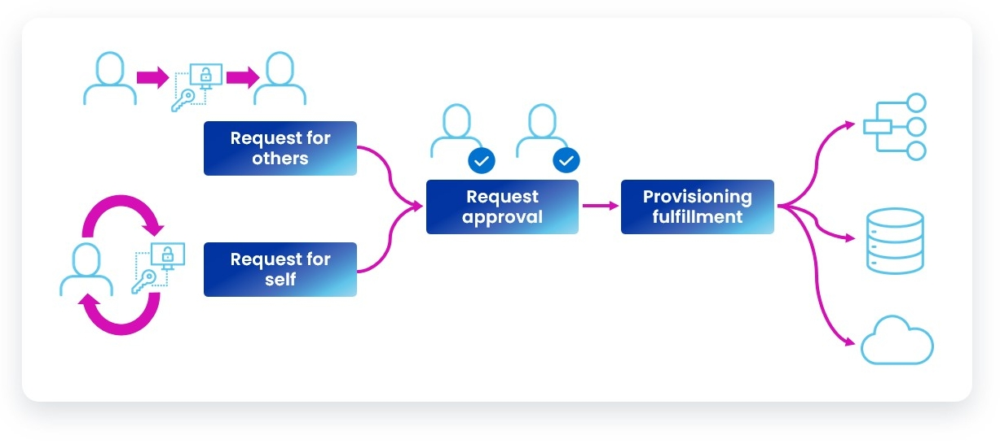
Request processThe three markers describe user requests for oneself or, when enabled, others; the approval gate; and provisioning on the native system. An expiry date also causes scheduled revocation. ISC coordinates notifications and these subsequent actions.
 Narrator transition
Narrator transition Section divider
Section dividerMaking a request: four steps
1. Choose who needs access. The requester selects themselves, their team or another permitted recipient. Sam's example is travel-booking access for an annual headquarters meeting, so she chooses Request for Yourself.
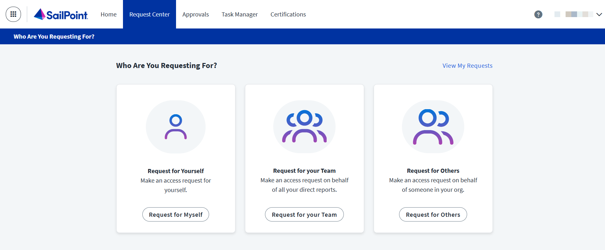
Choose the recipient2. Find the item. Browse applications and access items or use search. Details supplies context before selection.
 Find an access item
Find an access item3. Select the access profile. Sam opens Travel App and selects its Manager profile. The example permits an expiration date; Sam leaves it empty because the need recurs annually. Save 1 Selection adds the choice, and she can continue adding items.
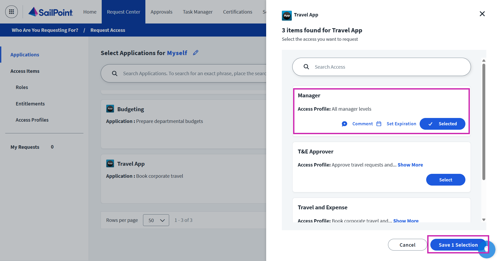
Select the access profile4. Review before submission. Review Request shows the selected items. The course then illustrates Submit Request. This is the course sequence, not an action performed during capture.
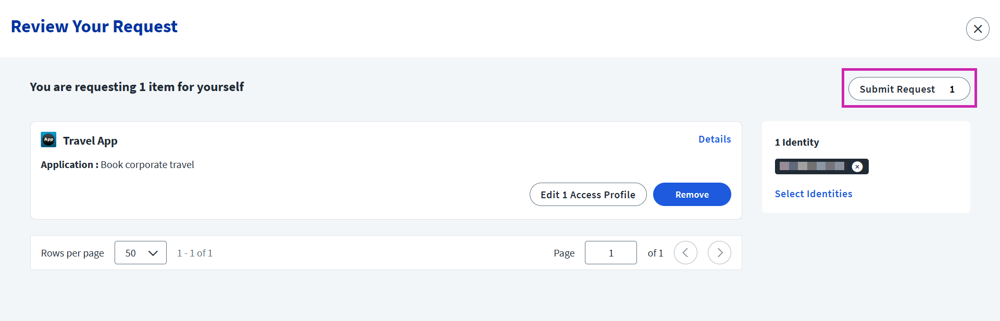
Review the request Narrator transition
Narrator transition Section divider
Section dividerRecommendations: both accordions
When enabled, a Recommended tab suggests access using peer relationships such as job, department, location and manager. The viewed lesson describes the top fifteen personalized items, excluding items considered too common, too rare or unavailable for requests. Its examples include Tax Systems, Accounting Systems and Accounts Payable Analyst.
 Access recommendations
Access recommendationsAccess Details explains the basis of a suggestion, such as the access held by other team members. A recommendation provides decision support; the configured request and approval process still applies.
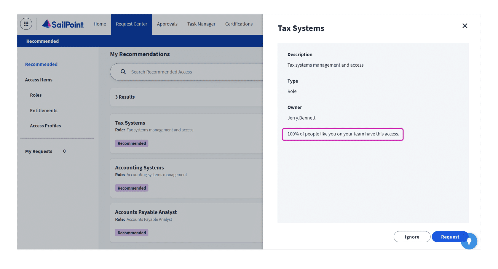
Recommendation detailsApprovals and fulfillment
Approvers receive email and can approve, deny or reassign. The course describes preventing self-approval by routing to a manager or administrator instead.
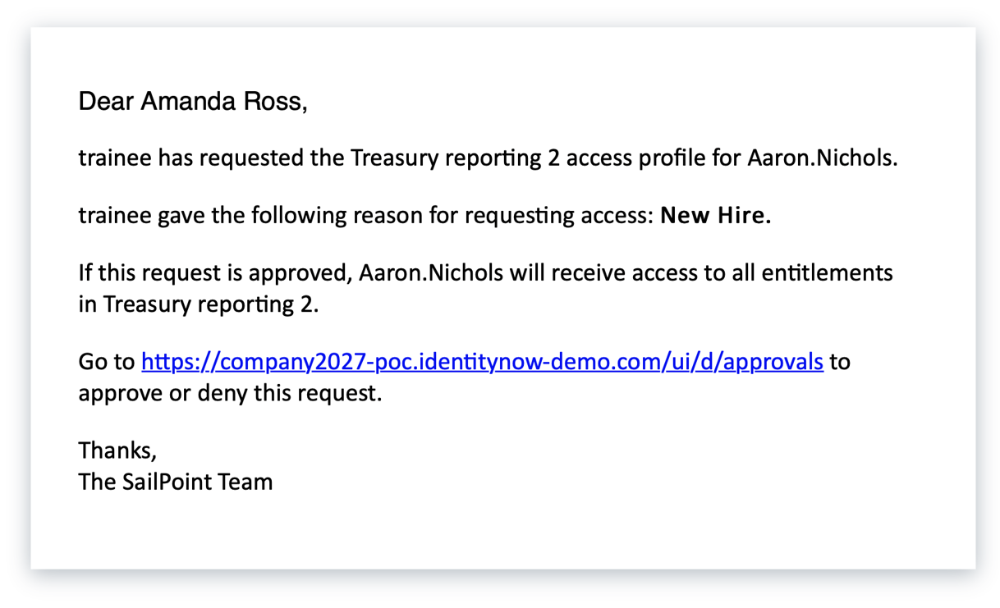
Request approvalPending decisions also appear in Approvals.
 Approvals
ApprovalsApproved access is provisioned and remains until expiry or revocation.
 Provisioning fulfillment
Provisioning fulfillment Narrator transitionSection divider
Narrator transitionSection dividerTrack requests: four markers expanded
From Request Center, View My Requests opens the user's submitted requests.
 Request Center
Request CenterMy Requests shows status, including pending, approved, denied or canceled. The remaining markers identify Details for process/account information, Comments for discussion, and Cancel for withdrawing a request.
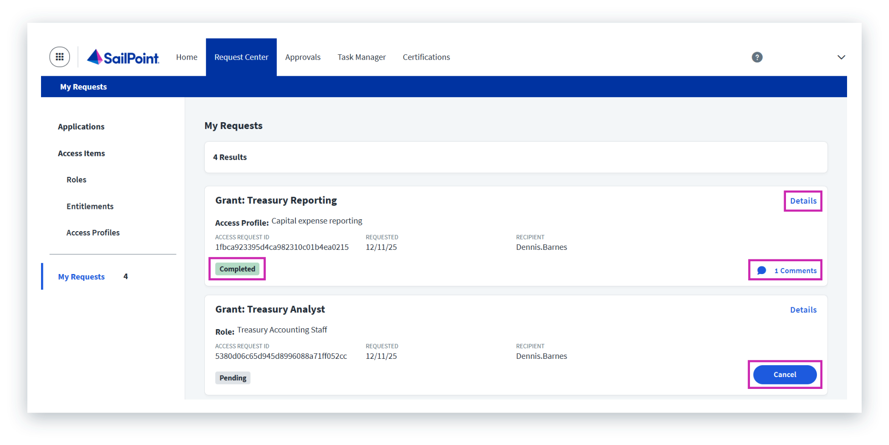
My RequestsThe Details panel brings together the process, request and account information.
 Request details
Request details Knowledge check
Knowledge checkCoverage: three process markers, two recommendation accordions, four request steps and four tracking markers were read. No request or quiz response was submitted.
9.3 Configuring access items for requests
Eligibility and the four configuration stages
Request eligibility should reflect business rules. The banking examples limit camera settings to senior security staff and vault access to senior management; employee benefits can be visible to employees without being offered to contractors.
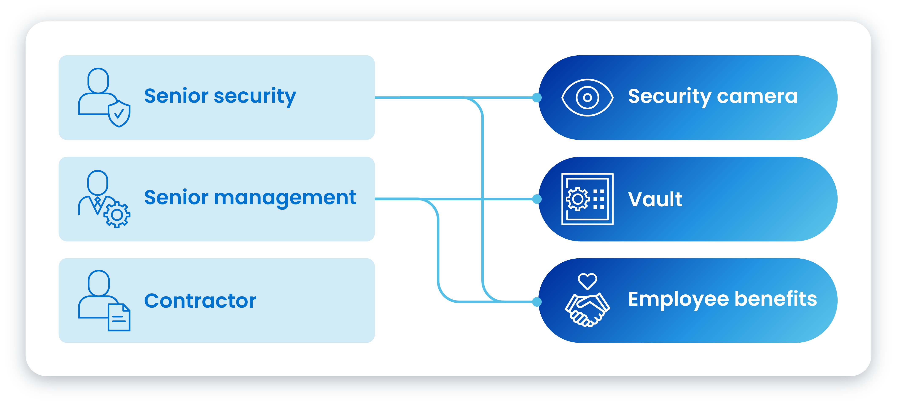
Request eligibility examples1. Configure requestable items. Decide which roles, access profiles and entitlements users can request.
Configure requestable items2. Define approvals. Roles and access profiles have item-level configuration. Entitlements begin with a global setting and can have specific approval overrides.
 Set approvals
Set approvals3. Define segments. Group identities so selected access items are visible to the appropriate population.
Define segments4. Configure requests for others. Decide whether managers or a wider population may act on behalf of another identity.
Requests on behalf of othersRoles and access profiles: five markers expanded
In the course interface, open Admin > Access Model > Roles or Access Profiles, edit the item and enable Allow Access Requests. Require Approval enables the associated review process.
 Role and access profile requests
Role and access profile requests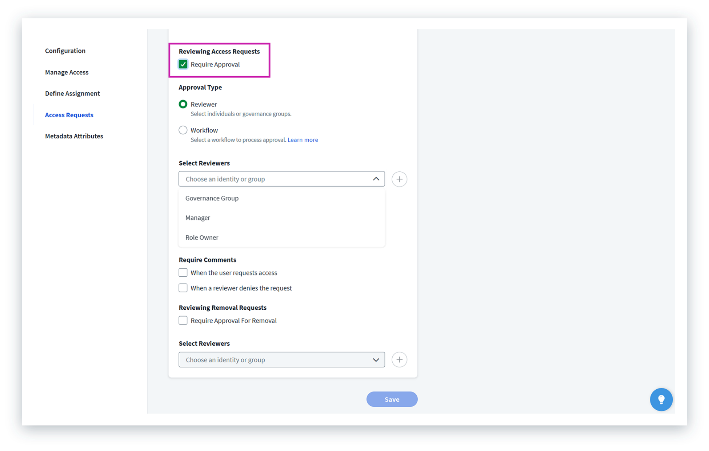
Request approval settingsApproval Type selects identity reviewers or an automated approval workflow. Reviewer choices include the recipient's manager, the role/access-profile owner or a governance group. Define their order. Require Comments controls where comments are needed. Removal requests can also have an approval process; the example discusses a manager requesting removal of a direct report's role. Save stores the configuration in the example.
 Narrator transition
Narrator transition Section divider
Section dividerEntitlement requests
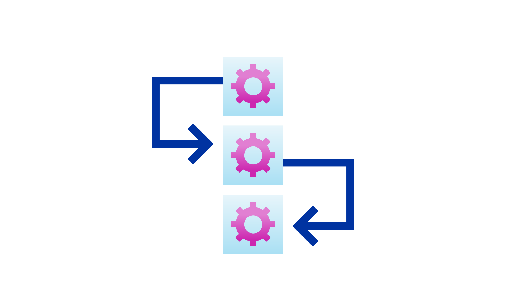
Entitlement requestsEnable Entitlement Requests through Admin > Global > System Settings > Feature Settings > Access Requests. Configure global approval behavior for grants and removals as needed, then save in the course example.
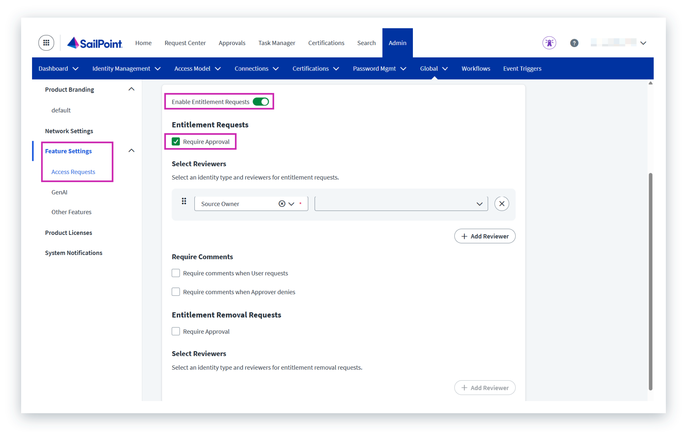
Enable entitlement requests globallyNext, mark individual entitlements requestable. One route is Connections > Sources, edit the source, open Entitlement Management > Entitlements, select the records and choose Mark as Requestable from Actions.
 Source entitlement requestability
Source entitlement requestabilityThe alternative route is Admin > Access Model > Entitlements, select the records, then Actions > Update Requestable Status > Mark as Requestable. Individual entitlements can have their own approval process rather than relying solely on the broader default.
 Catalog requestability
Catalog requestability Narrator transition
Narrator transitionAccess Request Segments
Segments group identities using identity attributes and limit which access items those users can see. Configure them through Admin > Access Model > Segments, then associate the relevant access items.
 Access request segments
Access request segmentsRequests on behalf of others
Under Global > System Settings > Feature Settings > Access Requests, the course shows Enable Requests on Behalf of others. Its options permit managers to request for their direct reports or everyone to request for anyone, depending on the organization's selected policy.
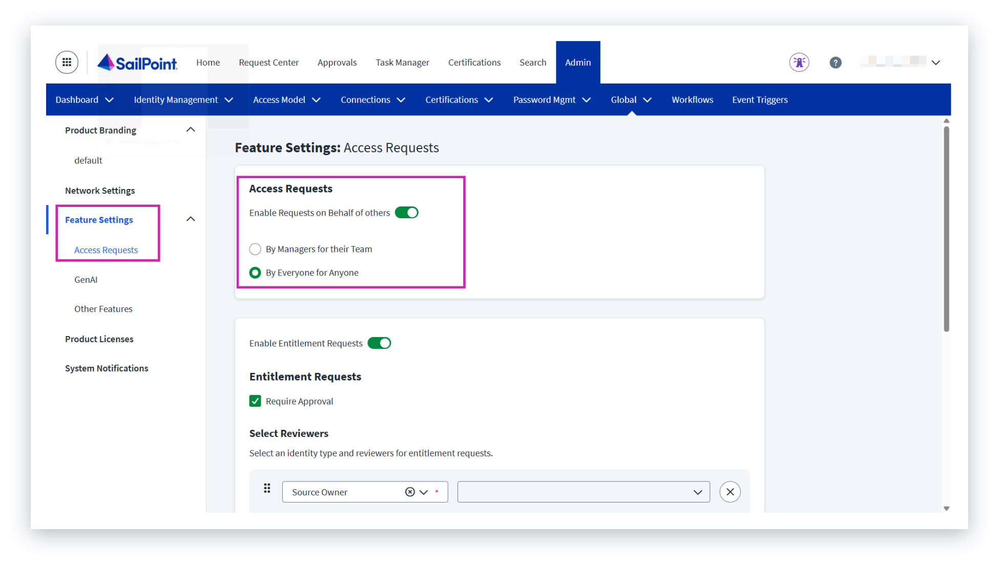
Enable requests for othersBest practices
Use recognizable business names and concise descriptions. The course gives a two-thousand-character description limit. Order approval stages deliberately: a denial stops the process, so an early reviewer who often rejects unsuitable requests can avoid unnecessary later review. Notification messages should state the business requirement and the action the recipient needs to take.
Coverage: all four setup panels, five approval markers and all continuation sections were read. No tenant setting, requestability flag or segment was changed.
9.4 Access request administration
Dashboard and access levels
The course route is Admin > Dashboard > Approval Management. Left navigation includes Access Requests, Entitlement Descriptions and other approvals.
 Approval Management dashboard
Approval Management dashboard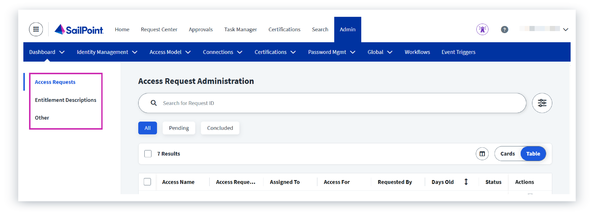
Approval navigationOrganization administrators have access. The lesson distinguishes Access Request Administrator for viewing and acting on requests from Access Request Read-Only Admin for viewing them.
 Dashboard administrator levels
Dashboard administrator levelsSearch and filters
Search by request ID; the example permits multiple IDs separated by commas and a maximum query length of 350 characters. The lesson specifically distinguishes this field from other ISC search fields.
 Search request IDs
Search request IDsFilters include Requested For, Requested By, Created Date, Current Owner and Status. The listed statuses are Pending, Completed, Canceled, Denied and Provisioning Failed. Apply activates the filter selection; remove a filter and apply again to revise the result set.
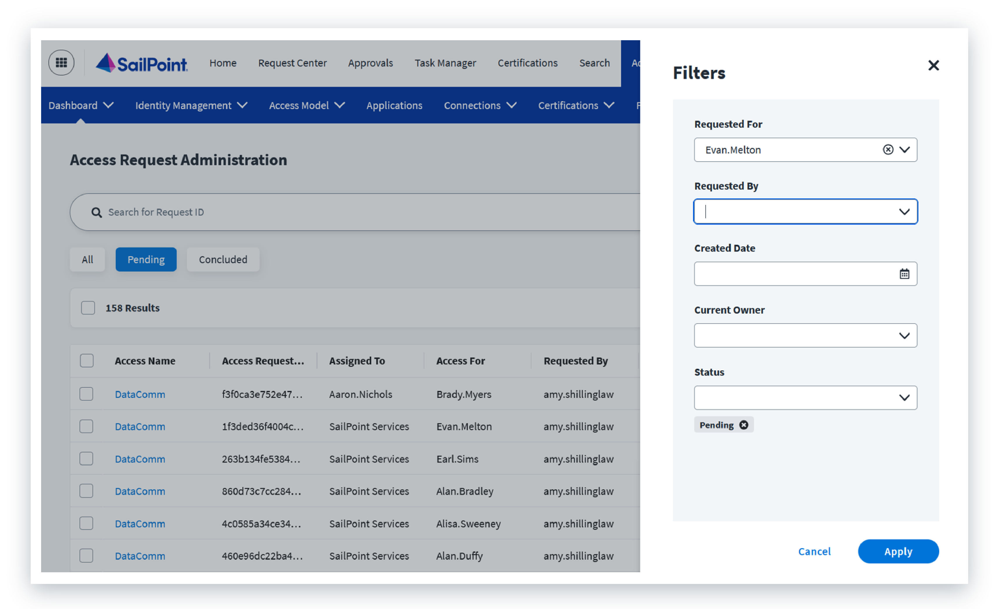
Request filters Section divider
Section dividerRequest actions and process view
View Details opens additional state information. Reassign changes the current handler. Remind User sends a notification. Cancel Request stops an unnecessary or invalid request.
 Request actions
Request actionsOpening a request displays its process diagram and available actions.
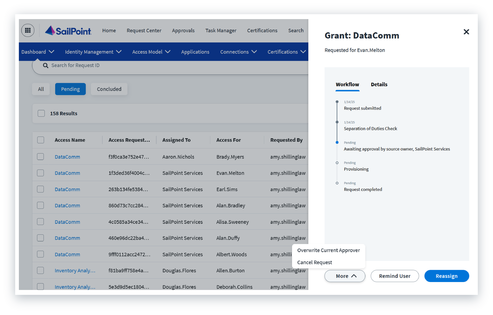
Request process viewSource inconsistency: the Process paragraph lists Overwrite current approver, while the same lesson's knowledge-check explanation says that this is not a standard workflow-window action. This study book records the conflict; it does not assert that the action is available. The consistent actions are reminder, reassignment and cancellation.
No live reminder was sent, no request was canceled or reassigned, and no administrator role was granted during capture.
9.5 Recap
The outcomes are to explain the request journey, configure requestable access and approvals, and use administration views to monitor the work. Distinguish requestability, visibility through segments, approval policy and downstream fulfillment: each controls a different part of access delivery.
Lesson footerModule coverage and missing materials
All five lessons and continuation sections were inspected. Forty-five distinct inline image URLs were saved and placed with their subjects. Three process markers, two recommendation accordions, four tracking markers, all four setup panels and five approval-configuration markers were expanded.
Six background-only files were not saved: the common photograph, four Alex lesson-banner variants and the recap banner. Exact paths appear in coverage.json. External resources, separately exported audiovisual narration and executable interactions are not included. Recommendation counts and field limits reflect the captured course version. The approver-overwrite contradiction is flagged above. Knowledge checks were not submitted.